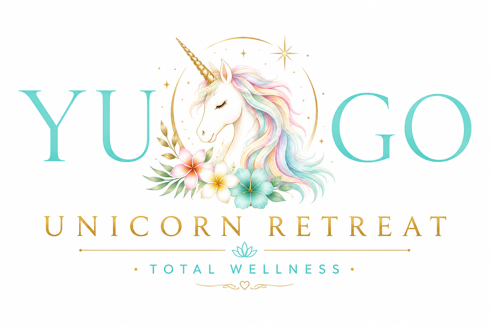

このシートを開いてくれたあなたへ、Alohaを送ります。
正解も間違いも、良い答えも悪い答えも、ありません。
少し深呼吸して、今のあなたの素直な声に耳を傾けながら答えてください。
回答時間の目安：8〜12分
身体は、いつもあなたに何かを伝えようとしています。
感情に良い悪いはありません。今のあなたをそのまま、やさしく見てあげてください。
今のあなたがここにいる理由を、一緒に見ていきましょう。
今のあなたの内側を、やさしく、ありのままに見てみましょう。
どんな自分に戻りたいですか？
今のあなたの準備状態を、正直に教えてください。
このシートに書いてくださったひとつひとつの言葉が、セッションをより深く、より温かい時間にしてくれます。
セッション当日、あなたにお会いできることを楽しみにしています。
— Kumi